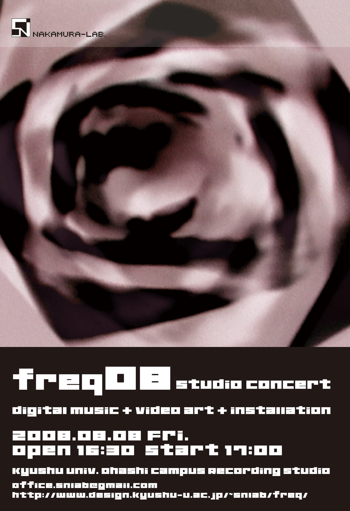

freq08 studio concert 調査中
2008
- 日時
- 2008年8月8日（金） 16:30開場、17:00開演
- 会場
- 九州大学大橋キャンパス 録音スタジオ
- 主催
- 中村研究室
digital music + video art + installation
なお、2008年8月2日にアクロス福岡円形ホールで「freq 08 ワークショップ・コンサート 視覚音楽へのあらたな地平」が行われましたが、中村滋延の報告によると freq シリーズとは別の独立した催しで、過去の上演作品からの選抜が中心でした。
資料

チラシ（表面）

出典
Wayback Machine の記録（2件）
- www.design.kyushu-u.ac.jp/~snlab/freq/2008/freq08stomote.gif（2011-07-22 時点）
- www.design.kyushu-u.ac.jp/~snlab/freq/freq08mini.jpg（2011-07-22 時点）